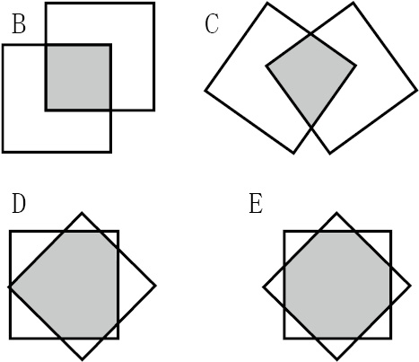

暖身趣味十题
你连13岁的孩子都不如吗？
（1）B
这4句话彼此矛盾，因此至多有一句话是正确的。如果只有一句话是正确的，毫无疑问就是第二句。
（2）A
如果重叠部分是三角形，那么这个三角形肯定有两条边是正方形的相邻两边，因此这个三角形肯定有一个角是90度。由此可见，重叠部分不可能形成三个角都是60度的等边三角形。其他形状可通过下列方式构成。

（3）D
考虑等式两边的个位数，就可以找出正确的等式。442 + 772的个位数是5（因为42的个位数是6，72的个位数是9），552 + 662与662 + 552的个位数是1，992 + 222的个位数是5，因此这些选项都不正确。我们只需要进行一些验证工作，就可以找出正确答案是：882 + 332 = 7 744 + 1 089 = 8 833。
（4）D
显而易见，符合条件的组合中至少有两个按钮位于“开”的状态。包含两个“开”、三个“关”的组合只有一种，即“关”“开”“关”“开”“关”。包含三个“开”、两个“关”的组合有6种。包含4个“开”、一个“关”的组合有5种。最后，包含5个“开”的组合只有一种。因此，一共有13种符合题意的组合。
（5）E
先考虑千位上的情况。已知所有字母代表的数字都不同，S = 3，因此M只能是0、1或2。我们可以排除0和1，否则就会因为“MANY”这个数过小而致使算式根本不可能成立。由此可见，M = 2，我们还知道百位上要进1。由此可以确定A = 9，因为如果A小于9，算式肯定无法成立。我们继而可以断定U只能是0，首先是因为它不能是9（9已经被占用），其次是因为从十位进1后，只有0符合要求。再考虑十位上的情况。因为N不可能是9（9已经被占用），所以N只能是8，且十位肯定从个位进1。至此，我们发现O + Y = 13。符合这个条件的O与Y只能是4和9，5和8，或6和7。由于8和9都已经被占用，所以只剩下最后一个可能，即6和7，6×7 = 7×6 = 42。
（6）D
只有在钟面读数由09 59 59变成10 00 00，由19 59 59变成20 00 00，以及由23 59 59变成00 00 00时，6个数字才会同时发生变化。
（7）D
前6个正立方数为1、8、27、64、125和216。显然，64不可能是三个正立方数的和，因为小于64的三个正立方数之和是1 + 8 + 27 = 36。同理，125也不可能是三个正立方数的和，因为小于125的三个正立方数的和，即8 + 27 + 64 = 99。但我们发现27 + 64 + 125 = 216，因此216是等于三个正立方数之和的最小立方数。
（8）C
前三项分别是–3、0、2，则第四项为–3 + 0 + 2 = –1，第五项为0 + 2 –1 = 1，以此类推。该数列前13项为：–3, 0, 2, –1, 1, 2, 2, 5, 9, 16, 30, 55, 101。
（9）C
第1页至第9页是9个数字，第10页至第99页是180个数字，在页码从第100页变为三位数之前，所有页码一共是189个数字。剩余的663个数字还可以表示221个三位数的页码，因此这本书的总页数为9 + 90 + 221 = 320页。
（10）B
根据想象，这个“十字架”有三个水平层。第一层只有1个立方体，粘贴在原立方体的上表面上。第二层包括原立方体以及粘贴在该立方体各个侧面上的4个立方体。第三层也只有1个立方体，粘贴在原有立方体的下表面上。当我们往这个“十字架”上添加黄色立方体时，第一层中蓝色立方体的上表面将粘贴1个黄色立方体，4个侧面也分别粘贴1个黄色立方体；第二层的蓝色立方体上将粘贴8个黄色立方体；第三层的蓝色立方体与第一层一样，也将粘贴5个黄色立方体，因此一共需要18个黄色立方体。